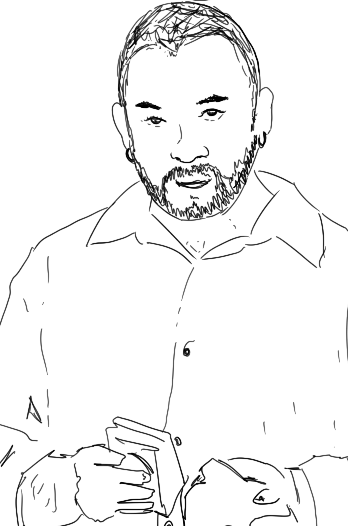

Rosco
Fondatore / Architetto
Si occupa di progettazione residenziale e direzione artistica. Ama disegnare a mano ogni concept.

Franca
Architetto
Specializzata in interni contemporanei e spazi pubblici. Attenta al dettaglio e alla luce.

Frank
Architetto
Coordina i progetti esecutivi e la modellazione 3D. Coniuga precisione tecnica e visione estetica.